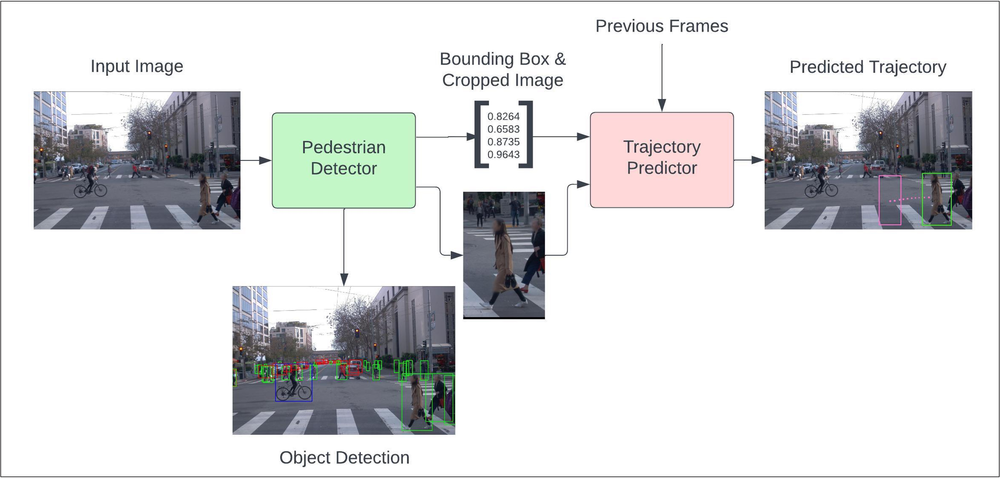
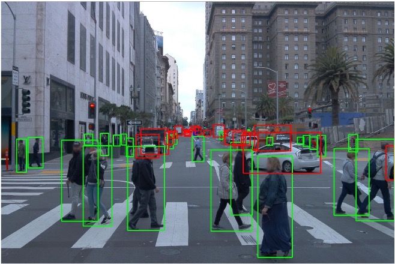
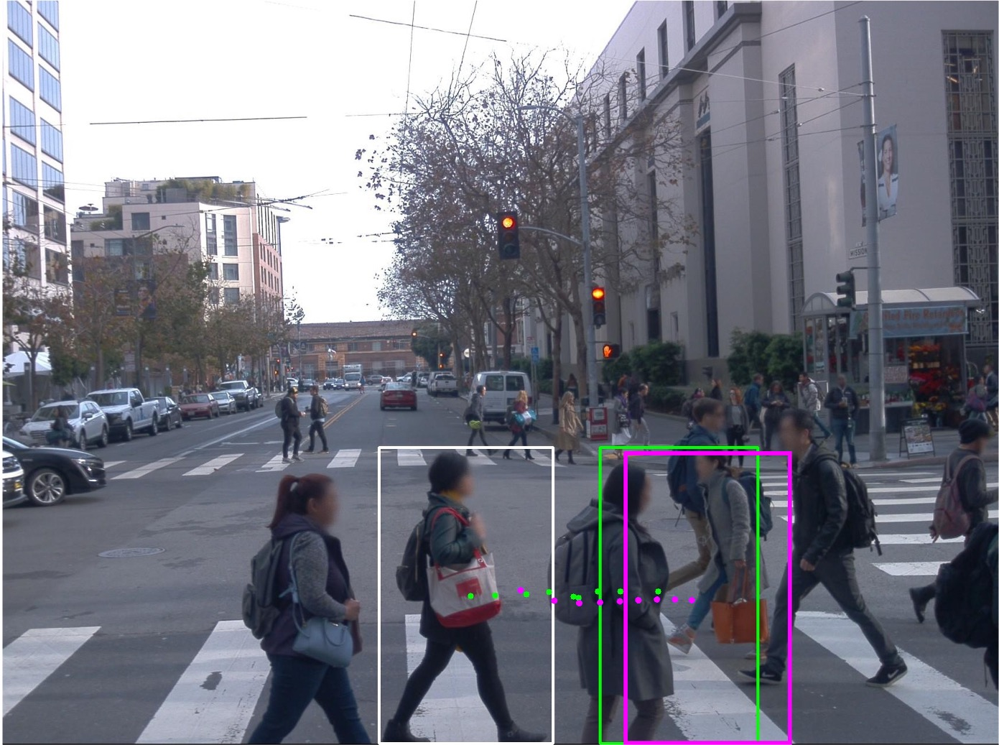

Pedestrian Detector & Trajectory Predictor



About:
- For my master's project, I developed a computer vision solution for detecting and predicting the trajectories of pedestrians from a 2D video from a car’s on-board camera.
- Written in Python
- Used YOLOv7 and TensorFlow Libraries.
GitHub Repo
Pedestrian Detector & Trajectory Predictor GitHub Repo